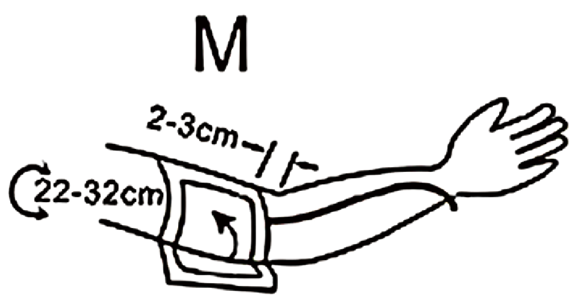
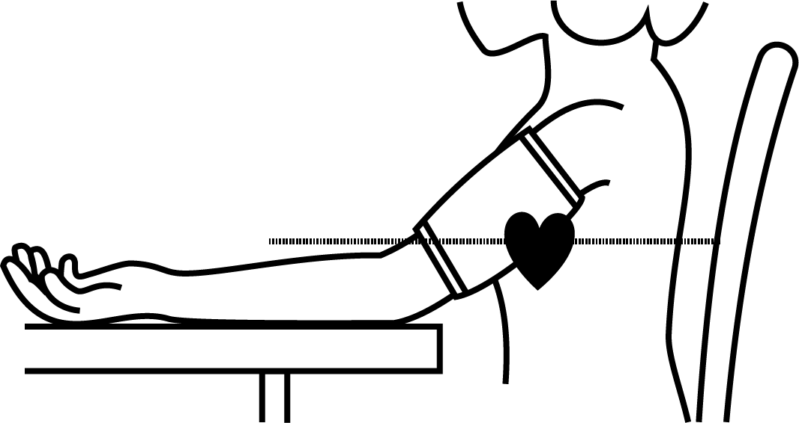

Insert air connector into air outlet shown in left photo and
please make sure the fitting of the air connector completely
and properly to avoid air leakage.
- The distance between the edge of cuff and the elbow
should be approx. 2~3cm.

- Secure the cuff with the Velcro fastener, so that it lies
comfortably and not too tight, whereby no space should
remain between the cuff and the arm.
- Lay the arm on a table, with the palm upwards. Support
the arm a little with a rest (cushion), so that the cuff rests at
about the same height as the heart. Take care, that the cuff
lies free. Remain so for 2 minutes sitting quietly, before beginning
with the measurement.

- Let legs uncrossed, feet flat on the floor, back and arm
supported.